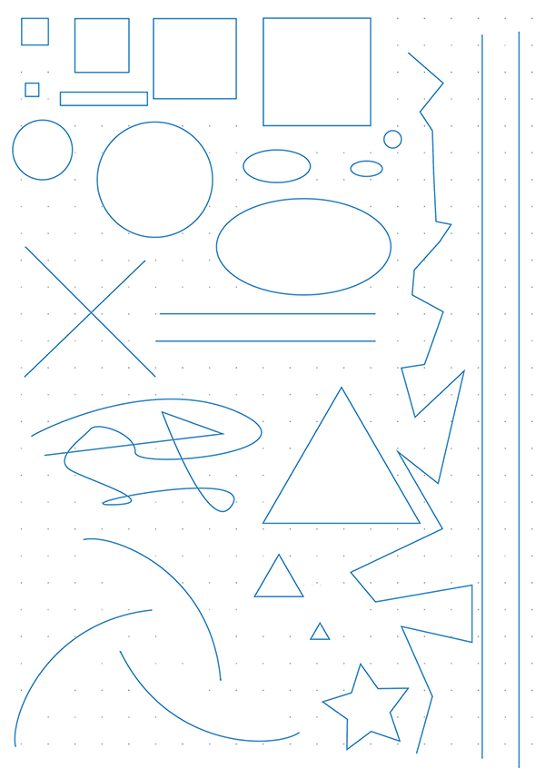

絵を描き始めた当初は気に留めていなかったが鉛筆の握り方で描きやすい形や線が違うということに気がついた。具体的にどう握って、どこを固定して、どう描くと描きやすいのかを知ってるのと知ってないのでは描くスピードに違いが出る。
いろんな鉛筆の持ち方・握り方があると思うが、自分が採用したのはこちらのサイトで紹介している５種類の鉛筆の持ち方(英語)。探せば他にも色んな持ち方がある。
各握り方で手のひら・手首・肘などを固定して描いてみたり、鉛筆をより垂直にして描いてみたり、寝かせる角度を変えてみたりして、どういう形を描くときにどういう握り方で書けばいいのかを知っておくと作業効率が上がる。あと、紙をくるくる回して、描きやすいように手ではなく紙の方の角度を変えることも大事。
具体的にどうしたかというと、適当にいろんな形や線を描いて、その線に沿って各々どの持ち方と角度が一番描きやすいかを実験した。個人差が大きいと思うので一概には言えないが、自分の場合で言うと、小さいものを描く時は普通の鉛筆の持ち方が一番描きやすく、まっすぐな線を引く時は自分の体に対して線が斜めになってる方が描きやすい、大きなものは採用したサイトに書かれてある4番目のにぎり方が一番描きやすかった。このように、自分の手の動きの法則を知っていると作業効率が飛躍的に上がる。
美術解剖学をやるとわかるが、それぞれの関節の動き方の特徴があるので、そのうちもっと具体的な実験方法をまとめようかと思っている。
